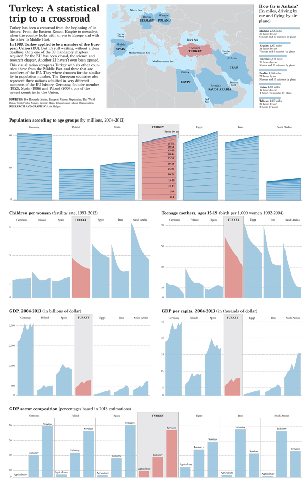
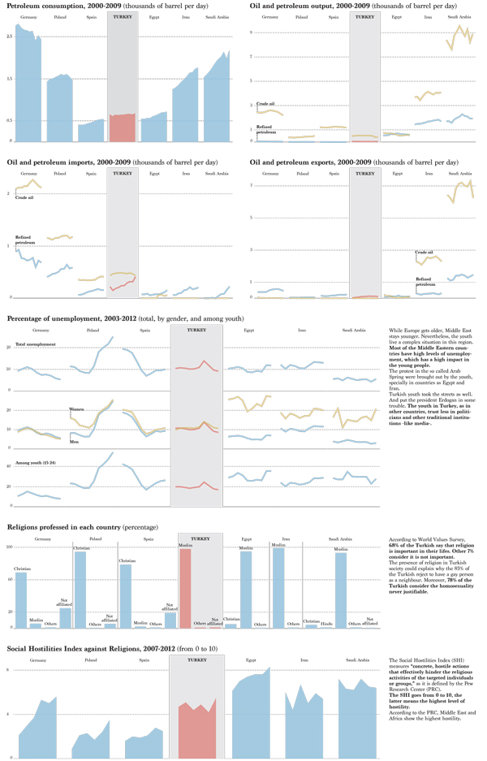

Turkey: A statistical trip
 This project was an assignment for the Infographics and Data Visualization's course at University of Miami. From a broad topic decided by the professor (Middle East), I had to choose an specific approach to the story, research, gather the data and visualize it
Software used: Numbers, Tableau, Illustrator